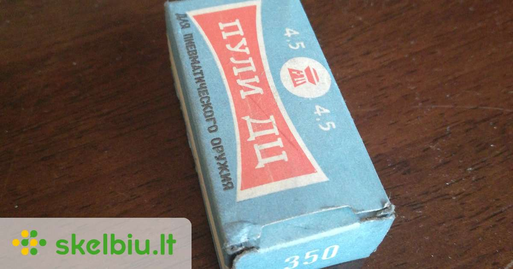

Medžioklės reikmenys medžioklė, žvejyba - Skelbiu.lt
X Dėl geresnės Skelbiu.lt paslaugų kokybės naudojame slapukus (angl. cookies).
Naršydami toliau, patvirtinate, kad sutinkate su slapukais. Tai bet kada galėsite atšaukti, pakeisdami nustatymus. Skelbiu.lt slapukų politika . Lankomiausias
skelbimų portalas LT RU ( 0 ) Įsiminti skelbimai ( 0 ) Peržiūrėti skelbimai Paieškos ( 0 ) Prisijungti Registruotis Medžioklės reikmenys, Medžioklė, žvejyba (1449) Gauti naujus skelbimus: Ekrane El. paštu + Įdėti skelbimą Įsiminti skelbimai (0) Skelbimų: 1449 Atnaujinti viršuje Naujausi viršuje Atnaujinti viršuje Pigiausi viršuje Brangiausi viršuje
NEPRALEISKITE NAUJŲ SKELBIMŲ
Medžioklės reikmenys, Medžioklė, žvejyba
Gaukite naujus skelbimus į ekraną Gaukite naujusskelbimus el. paštu Vilnius, ... prieš 1 d. 5
Naktinio matimo ziuronas katod
Parduodu naktinio matimo ziurona katod-2+ 2-obiektivai puikiai veikia jokiu defektu kaina-1100eur Būklė: naudota 1 100 € Palanga prieš 1 d. 1Baigish-6u su Pulsar patsvetke
Puikia veikiantis, Skambinti +37069835585 Būklė: naudota 650 € Vilnius, ... prieš 10 val. 1Gera kaina! Galingi ikraunami prozektoriai.
Nauji galingi prozektoriai su fokusavimo funkcijomis. 1. 3000Lm (itin ryskiai sviecia, apie 1.5km) Ikroviklis bei Akumuliatoriai komplektacijoje. Ilgis 24cm Plotis 3.5cm (ploniausios dalies) 25eu. 2. Komufliazinis Apie 1200Lm (sviecia apie... Būklė: nauja 18 € Šilalės r. spalio 25 d. 1 Parduota per 3 d.Parduodu nauja! Naktinio matymo prietaisą.
Naujas! Wildgame+ WG650 Profesionalus naktinio matymo prietaisas. Būklė: nauja 140 € Kaunas, ... prieš 2 val.Naktinio matymo žiuronai
Baigysh 25B,25,6,12 Būklė: nauja 1 000 € Kita prieš 2 val.2xp50f
Pulsar Helion Būklė: nauja 3 400 € Klaipėda, ... prieš 3 val.Parduodu Kolekcionuotus Peilius!
PARDUODU KOLEKCIONUOTUS MEDŽIOKLINIUS / TURISTINIUS PEILIUS. Medžiokliniai, Žvejybiniai, Turistiniai peiliai. Nauji, gero metalo kokybiški ir tvirti. Siunčiu pašto matu. Būklė: nauja 15 € Klaipėda, ... prieš 3 val.Parduodu Kolekcionuotus Peilius!
PARDUODU KOLEKCIONUOTUS MEDŽIOKLINIUS / TURISTINIUS PEILIUS. Medžiokliniai, Žvejybiniai, Turistiniai peiliai. Nauji, gero metalo kokybiški ir tvirti. Siunčiu pašto matu. Būklė: nauja 15 € Vilnius, ... prieš 4 val.Prožektorius ant galvos su judesio davikliu
Prožektorius ant galvos su judesio davikliu. Galingas 1500lm ir patogus. Naudojamas su 18650 akkumuliatoriumi (yra komplekte). Galima ijungti ir išjungti rankos mostu. Kraunasi nuo USB lizdo. Kaina 20 euru. Siunčiu i visus miestus... Būklė: nauja 20 € Panevėžys prieš 4 val.Mag-lite
Vienas 31cm. kitas 14cm . Būklė: naudota 10 € Reklama Vilnius prieš 4 val.Prozektoriai medzioklei, žvejybai ir netik
Galvalempės: Naujas labai galingas prožektorius ant galvos su zoom, arba be funkcija. Integruotas XHP70 CREE ledas, kuris išgauna 2200LM šviesos srautą (ptikrinta KTU laboratorijoje). Šviečia sakyčiau nesveikai, 0.5km ne riba. Maitinamas 3vnt... Būklė: nauja 16 € Vilnius prieš 4 val.Uv prozektoriai, galvalempes, rašikliai
Parduodami nauji ultra violetiniu spinduliu prozektoriai, skirti tikrinti gintarui, pinigams, freono skysciui. Yra galimybe uzsisakyti pakeisti CREE LED lemputes pagal Jusu poreikius. Galvalempes su reflektoriu, kuriuose pasirinktinai... Būklė: nauja 3 € Alytus, ... prieš 4 val.Liko tik 52 ismiera. Žieminis kostiumas (-25c)
Labai šiltas (-25C) ir patogus nešioti žvėjybos, medžioklės komplektas: 1. Striukė 2. Kombinezonas . Nuimamas gobtuvas. Papildomos kišenės. Minkšta medžiaga (nešiugžda) Dalinai atsparus drėgmei. . Turiu įvairių dydžių, todėl... Būklė: nauja 55 € Elektrėnai, ... prieš 4 val.Žiūronai Steiner Skyhawk.
Parduodu dėvėtus žiūronus STEINER SKY HOWK 10X26. Būklė: naudota 115 € Vilnius prieš 4 val.Daugiafunkcinis sulankstomas peilis
Daugiafunkcinis sulankstomas peilis dekoruotas gintaro mozaika.Kaina 18eur Būklė: nauja 18 € Palanga prieš 4 val.Deerhunter Ghille kostiumas
Siunčiu į kitus miestus Būklė: naudota 30 € Palanga prieš 4 val. RezervuotaCabelas medžiojimo spranga
Tvirtas ir patikimas kostiumas iš cabelas. Dydis XL Siunčiu į kitus miestus Būklė: naudota 60 € Kazlų Rūda, ... prieš 5 val.Parduodu seifa ginklui
Parduodami nauji seifai tinkantys ginklo laikymui. Aukštis 25 cm, plotis 32 cm, gylis 25cm . Metalo storis 5 mm . Spyna , plokštelinio mechanizmo (kaip ir priklauso pagal reikalavimus). Svoris apie 22kg. Vidiniai lankstai su išnesimu, kad durys... Būklė: nauja 110 € Klaipėda prieš 5 val.Metalinis seifas
Parduodu seifą, tvirtinama prie grindų, bet galima tvirtinti ir prie sienos. Kažkada tarnavęs policijai, iš vidas kaip naujas, iš išorės reiktų perdažyti. Gamyklinis daiktas su rimtu užraktu plius vieta pakabinamai spynai bei plombai. Dangčio... Būklė: naudota 35 € Vilnius prieš 5 val.Parduodu seifą ginklams
Parduodu naudota bet prižiūrėta seifą ginklams. seife atskirai yra skyrelis šoviniams taip pat turi atskirą užraktą. seifas atitinka visus ginklų laikymo reikalavimus. Dėl kainos galima dar derėtis. Plotis 60cm. gylis 48cm. aukįtis 135cm. Būklė: naudota 95 € Panevėžys prieš 6 val.Kareiviška striukė
Dėvėta kareiviška striukė. Dydis 164/104, tinka iki 178 ugio. Būklė 9 iš10. Būklė: naudota 15 € Vilnius, ... prieš 6 val.Uzdarytuvas skardiniu dežučiu-ivairiu dydziu
Uzdarytuvas skardiniu dezuciu,uzdaro kokybiskai ivairios talpos skadines,suteikiama garantija,pristatymas visoje LT Būklė: nauja 295 € Vilnius, ... prieš 6 val.Konservu dezuciu uzdarytuvas
Konservu dezuciu uzdarytuvas ivairiu dydziu skardinems,kokybiskai uzvalcuoja dangtelius,suteikiama garantija,pristatymas visojeLT Būklė: nauja 295 € Kaunas, ... prieš 6 val.Autoklavas
Autoklavai is nerudyjancio plieno 130ltr,25ltr,30ltr talpos,komplektacija termometras,manometras,apsauginis voztuvas,ventilis,karsciui atspari tarpine,yra naudojimo instrukcija,receptai,suteikiama garantija Pristatymas visoke Lietuvoje Būklė: nauja 130 € 1 2 3 4 5 6 Įsiminti skelbimai Įdėkite skelbimąPopuliarios paieškos:
optika
pulsar
optiniai taikikliai
peiliai
optikos
termovizorius
harkila
taikiklis
laikikliai
kalimatorius
bokstelis
peiliai marijampole
optinis taikiklis
lazeris kaunas
kolimator
Prisijunk ir rask savo įsimintus skelbimus visur – kompiuteryje, telefone, planšetėje ARBA Jungtis su Facebook Jungtis su Google Skelbiu.lt pagalba: +370 664 55727 Darbo laikas: I-V 08:20 - 17:00 Naudojimo taisyklės / D.U.K. Kontaktai Svetainės struktūra D I G I N E T